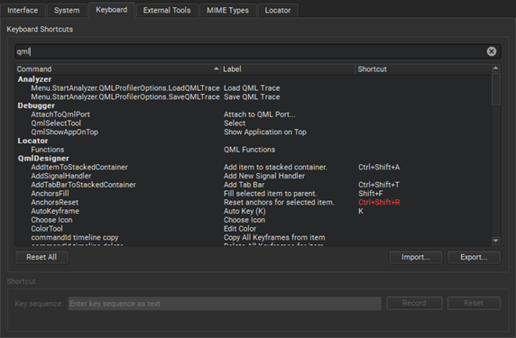

Keyboard Shortcuts
Qt Creator has various keyboard shortcuts that speed up your development process. To view all Qt Creator functions and their keyboard shortcuts, select Preferences > Environment > Keyboard.

Shortcuts that are displayed in red are associated with several functions. Qt Creator executes the function that is available in the current context. If several functions are available for the same shortcut in the current context, Qt Creator will not execute any function due to the conflict.
A keyboard shortcut might also conflict with a shortcut that your window manager uses for its own purposes. If the window manager consumes the key event, the Qt Creator shortcut will not be activated. Typically, you can configure the shortcuts in the window manager, but if that is not allowed, you can change the Qt Creator shortcuts. For example, Unity on Ubuntu 11.10 by default uses F10 in its window manager, and therefore the default Qt Creator keyboard shortcut F10 (Step Over) will not work on that system.
To override the platform default value that determines whether keyboard shortcuts are shown in the labels of context menu items, select Preferences > Environment > Interface. The label of the Show keyboard shortcuts in context menus check box indicates whether the platform default value is on or off.

The following tables list the default keyboard shortcuts. They are categorized by actions.
General Keyboard Shortcuts
| Action | Keyboard shortcut |
|---|---|
| Open file or project | Ctrl+O |
| New project | Ctrl+Shift+N |
| New file | Ctrl+N |
| Open in external editor | Alt+V, Alt+I |
| Select all | Ctrl+A |
| Delete | Del |
| Cut | Ctrl+X |
| Copy | Ctrl+C |
| Paste | Ctrl+V |
| Redo | Ctrl+Y |
| Ctrl+P | |
| Save | Ctrl+S |
| Save all | Ctrl+Shift+S |
| Close window | Ctrl+W |
| Close all | Ctrl+Shift+W |
| Close current file | Ctrl+F4 |
| Go back | Alt+Left |
| Go forward | Alt+Right |
| Go to line | Ctrl+L |
| Next open document in history | Ctrl+Shift+Tab |
| Go to other split | Ctrl+E, O |
| Previous open document in history | Ctrl+Tab |
| Activate Locator | Ctrl+K |
| Switch to Welcome mode | Ctrl+1 |
| Switch to Edit mode | Ctrl+2 |
| Switch to Design mode | Ctrl+3 |
| Switch to Debug mode | Ctrl+4 |
| Switch to Projects mode | Ctrl+5 |
| Switch to Help mode | Ctrl+6 |
| Toggle Issues | Alt+1 (Cmd+1 on macOS) |
| Toggle Search Results | Alt+2 (Cmd+2 on macOS) |
| Toggle Application Output | Alt+3 (Cmd+3 on macOS) |
| Toggle Compile Output | Alt+4 (Cmd+4 on macOS) |
| Toggle other output views | Alt+number (Cmd+number on macOS) Where the number is the number of the view. |
| Activate Bookmarks view | Alt+M |
| Activate File System view | Alt+Y |
| Activate Open Documents view | Alt+O |
| Maximize output views | Alt+Shift+9 |
| Move to next item in output | F6 |
| Move to previous item in output | Shift+F6 |
| Activate Projects view | Alt+X |
| Full screen | Ctrl+Shift+F11 |
| Toggle the sidebar | Alt+0 (Cmd+0 on macOS) |
| Undo | Ctrl+Z |
| Move to Edit mode In Edit mode:
| Esc |
| Exit Qt Creator By default, Qt Creator exits without asking for confirmation, unless there are unsaved changes in open files. To always be asked, select the Ask for confirmation before exiting check box in Preferences > Environment > System. | Ctrl+Q |
Editing Keyboard Shortcuts
| Action | Keyboard shortcut |
|---|---|
| Auto-indent selection | Ctrl+I |
| Collapse | Ctrl+< |
| Expand | Ctrl+> |
| Trigger a completion in this scope | Ctrl+Space |
| Display tooltips for function signatures regardless of the cursor position in the function call | Ctrl+Shift+D |
| Copy line | Ctrl+Ins |
| Copy line down | Ctrl+Alt+Down |
| Copy line up | Ctrl+Alt+Up |
| Paste from the clipboard history | Ctrl+Shift+V Subsequent presses move you back in the history |
| Cut line | Shift+Del |
| Join lines | Ctrl+J |
| Insert line above current line | Ctrl+Shift+Enter |
| Insert line below current line | Ctrl+Enter |
| Decrease font size | Ctrl+- (Ctrl+Roll mouse wheel down) |
| Increase font size | Ctrl++ (Ctrl+Roll mouse wheel up) |
| Reset font size | Ctrl+0 |
| Toggle Vim-style editing | Alt+Y, Alt+Y |
| Split | Ctrl+E, 2 |
| Split side by side | Ctrl+E, 3 |
| Remove all splits | Ctrl+E, 1 |
| Remove current split | Ctrl+E, 0 |
| Select all | Ctrl+A |
| Go to block end | Ctrl+] |
| Go to block start | Ctrl+[ |
| Go to block end and select the lines between the current cursor position and the end of the block | Ctrl+Shift+] |
| Go to block start and select the lines between the current cursor position and the beginning of the block | Ctrl+Shift+[ |
| Select the current block The second press extends the selection to the parent block. To enable this behavior, select Preferences > Text Editor > Behavior > Enable smart selection changing. | Ctrl+U |
| Undo the latest smart block selection | Ctrl+Alt+Shift+U |
| Move current line down | Ctrl+Shift+Down |
| Move current line up | Ctrl+Shift+Up |
| Trigger a refactoring action in this scope | Alt+Enter |
| Rewrap paragraph | Ctrl+E, R |
| Enable text wrapping | Ctrl+E, Ctrl+W |
| Toggle comment for selection | Ctrl+/ |
| Visualize whitespace | Ctrl+E, Ctrl+V |
| Toggle bookmark | Ctrl+M |
| Go to next bookmark | Ctrl+. |
| Go to previous bookmark | Ctrl+, |
| Fetch snippet | Alt+C, Alt+F |
| Paste snippet | Alt+C, Alt+P |
| Find references to symbol under cursor | Ctrl+Shift+U Note: If this keyboard shortcut does not work on Linux, see Editing Issues. |
| Follow symbol under cursor Works with namespaces, classes, functions, variables, include statements, and macros, as well as CMake functions, macros, targets, and packages. Also, opens URLs in the default browser and Qt resource files (.qrc) in the resource editor | F2 |
| Rename symbol under cursor | Ctrl+Shift+R |
| Switch between function declaration and definition | Shift+F2 |
| Open type hierarchy | Ctrl+Shift+T |
| Switch between header and source file | F4 |
| Add a cursor at the next occurrence of selected text for multi-cursor editing | Ctrl+D |
| Turn selected text into lowercase | Alt+U |
| Turn selected text into uppercase | Alt+Shift+U |
| Sort selected lines alphabetically | Alt+Shift+S |
| Run static checks on JavaScript code to find common problems | Ctrl+Shift+C |
| Find and replace | Ctrl+F |
| Find next | F3 |
| Find previous | Shift+F3 |
| Find next occurrence of selected text | Ctrl+F3 |
| Find previous occurrence of selected text | Ctrl+Shift+F3 |
| Replace next | Ctrl+= |
| Open advanced find | Ctrl+Shift+F |
| Record a text-editing macro | Alt+[ |
| Stop recording a macro | Alt+] |
| Play last macro | Alt+R |
| Show Qt Quick toolbars | Ctrl+Alt+Space |
| Execute user actions in FakeVim mode | Alt+Y, n, where n is the number of the user action, from 1 to 9 |
Emacs Shortcuts
You can specify shortcuts for executing actions in a way that is familiar to Emacs editor users. The actions are not bound to any key combinations by default.
Note: Enable the EmacsKeys plugin to use the shortcuts.
The following actions are available:
- Copy
- Cut
- Delete Character
- Exchange Cursor and Mark
- Go to File End
- Go to File Start
- Go to Line End
- Go to Line Start
- Go to Next Character
- Go to Next Line
- Go to Next Word
- Go to Previous Character
- Go to Previous Line
- Go to Previous Word
- Insert Line and Indent
- Kill Line
- Kill Word
- Mark
- Scroll Half Screen Down
- Scroll Half Screen Up
- Yank
Qt Designer Shortcuts
| Action | Keyboard shortcut |
|---|---|
| Adjust size | Ctrl+J |
| Lay out in a grid | Ctrl+G |
| Lay out horizontally | Ctrl+H |
| Lay out vertically | Ctrl+L |
| Preview | Alt+Shift+R |
| Edit signals and slots | F4 |
Image Viewer Shortcuts
| Action | Keyboard shortcut |
|---|---|
| Switch to background | Ctrl+[ |
| Switch to outline | Ctrl+] |
| Zoom in | Ctrl++ |
| Zoom out | Ctrl+- |
| Fit to screen | Ctrl+= |
| Original size | Ctrl+0 |
Debugging Keyboard Shortcuts
| Action | Keyboard shortcut |
|---|---|
| Start or continue debugging | F5 |
| Exit debugger | Shift+F5 |
| Step over | F10 |
| Step into | F11 |
| Step out | Shift+F11 |
| Set or remove breakpoint | F9 (F8 on macOS) |
| Enable or disable breakpoint | Ctrl+F9 (Ctrl+F8 on macOS) |
| Run to selected function | Ctrl+F6 |
| Run to line | Ctrl+F10 |
| Reverse direction | F12 |
Project Keyboard Shortcuts
| Action | Keyboard shortcut |
|---|---|
| Build project | Ctrl+B |
| Build all | Ctrl+Shift+B |
| New project | Ctrl+Shift+N |
| Open project | Ctrl+Shift+O |
| Select the kit to build and run your project with | Ctrl+T |
| Run | Ctrl+R |
Help Keyboard Shortcuts
| Action | Keyboard shortcut |
|---|---|
| View context-sensitive help | F1 |
| Activate contents in Help mode | Ctrl+T |
| Add bookmark in Help mode | Ctrl+M |
| Activate index in Help mode | Ctrl+I |
| Reset font size | Ctrl+0 |
| Activate search in Help mode | Ctrl+S |
Version Control Keyboard Shortcuts
| Action | Version control system | |||||
|---|---|---|---|---|---|---|
| Bazaar | CVS | Git | Mercurial | Perforce | Subversion | |
| Add | Alt+C, Alt+A | Alt+G, Alt+A | Alt+P, Alt+A | Alt+S, Alt+A | ||
| Commit/Submit | Alt+Z, Alt+C | Alt+C, Alt+C | Alt+G, Alt+C | Alt+G, Alt+C | Alt+P, Alt+S | Alt+S, Alt+C |
| Diff | Alt+Z, Alt+D | Alt+C, Alt+D | Alt+G, Alt+D | Alt+G, Alt+D | Alt+S, Alt+D | |
| Diff project or repository | Alt+G, Alt+Shift+D | Alt+P, Alt+D | ||||
| Blame/Annotate | Alt+G, Alt+B | |||||
| Log/Filelog | Alt+Z, Alt+L | Alt+G, Alt+L | Alt+G, Alt+L | Alt+P, Alt+F | ||
| Log repository | Alt+G, Alt+K | |||||
| Status | Alt+Z, Alt+S | Alt+G, Alt+S | ||||
| Undo changes/Revert | Alt+G, Alt+U | Alt+P, Alt+R | ||||
| Edit | Alt+P, Alt+E | |||||
| Opened | Alt+P, Alt+O | |||||
See also Assign keyboard shortcuts, Find keyboard shortcuts, Import and export keyboard shortcuts, and Enable and disable plugins.